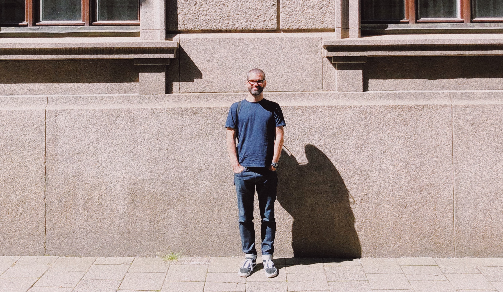

About Magnus Dahlgren

I’m a freelance Agile Team Coach and Facilitator based in London, United Kingdom.
I started out as a software developer but have been working as a Scrum Master and Agile Coach in some shape or form for the past 12 years. I love helping teams deliver awesome products, supporting them and those around them in finding approaches and ways of working that work for them.

What I’ve done so far
- Magnus Dahlgren Enterprises (since 2019). Starting September 2019, I'm offering freelance Agile Team Coach and Fafilitator services on a short-term basis.
- MyDrive Solutions (since 2018). In my current role as agile coach, I support several teams and am building an Agile Community of Practice.
- Hive (2017 - 2018). As a Scrum Master on a contract basis, I initiated a new team in a new product area and helped them become a productive and jelled team despite being spread across 4 timezones.
- BBC (2010 - 2017). I had the pleasure of working with several different teams around the corporation as a Scrum Master, helping them deliver services that millions of users care very passionately about.
- Ominor Ltd (2007 - 2010). I learned a lot during my time at this e-commerce agency, starting as a scrum master and ending up as a product owner.
- Pilotfish Networks (2004 - 2007). My first real job was as a Java developer back in my native Sweden. After a couple of years, I took the step to become a project manager. Soon thereafter I came across a better way of working called ’agile’ and took my Certified Scrum Master in 2007.
My qualifications

- Certified Scrum Professional – CSP-SM (only 1% of CSMs hold this certification)
- Advanced Certified Scrum Master – A-CSM
- Certified Scrum Master – CSM (I’ve held this certification longer than 95% of other CSMs)
- LeSS Practitioner – Large Scale Scrum
- Coaching Agile Transitions – ICAgile Certified Professional – ICP-CAT
- Agility in the Enterprise – ICAgile Certified Professional – ICP-ENT
- Agile Coaching – ICAgile Certified Professional – ICP-ACC
- Agile Team Facilitation – ICAgile Certified Professional – ICP-ATF
- Lean Facilitator – LCS Level 1b
And my Master of Science in Computer Science and Engineering (MSc) provides me with a reasonably sound technical understanding.
Contact me
The best way to say hello is to drop me a line on me@magnusd.cc.